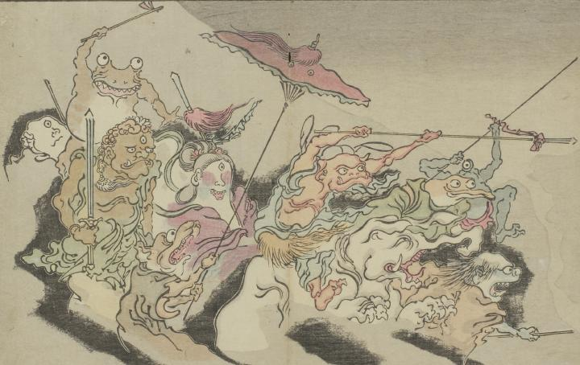

各々が武器を持っている化物たち。さながら合戦に向かう軍勢のようである。中央の白い象に数体の化物が乗っている。
出典：親書誌：U426_nichibunken_0093：暁斎百鬼画談；ギョウサイヒャッキガダン／日付：2006／資源識別子：U426_nichibunken_0093_0002_0000
Copyright (c)2010- International Research Center for Japanese Studies, Kyoto, Japan. All rights reserved.